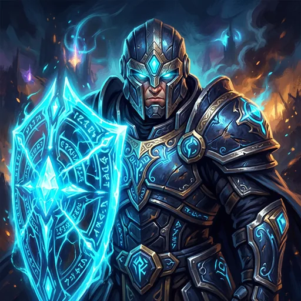

УР. 1ПИЛОТ ЭФИРАСЕРЕБРО · 1000ЧЕСТЬ · ДОБРОЖЕЛАТЕЛЬ◈ 0

ВОИН · ВЫЖИВАЕМОСТЬСТРАЖДержит фронт, принимает удар и создаёт пространство для команды.ТАНККОНТРОЛЬФРОНТ
AETHER RIFT · LIVE PROTOTYPEAETHER CLASH
Тренировочная арена
Выберите героя и войдите в живую боевую арену: линии, джунгли, цели и командные столкновения.
5×5 КЛАССИКА9 ГЕРОЕВ20+ РЕЖИМОВLIVE СИМУЛЯЦИЯ
ПКМ движениеWASD движениеЛКМ выбрать цельSpace атакаC сменить героя-цельQ E R T способностиF СкачокZ Пробуждение2 выбранное заклинаниеB база / магазинG командный сигналX атака по пути4 тотем обзора5 активный предмет6 сменить предметY эмоция мастерстваV эфирный сканер1 эликсирF9 сброс тренировки🎮 A/X/B/Y P2: атака / навык / рывок / ульт
РЕДАКТОР HUDПеретаскивайте кнопки
Поверните устройствоВ альбомной ориентации играть удобнее